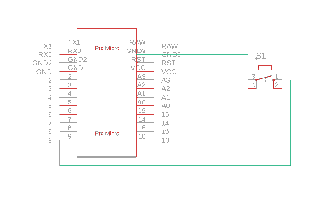
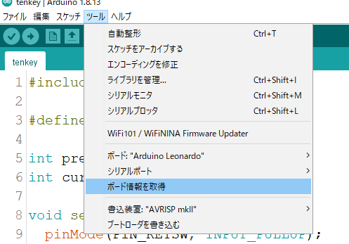
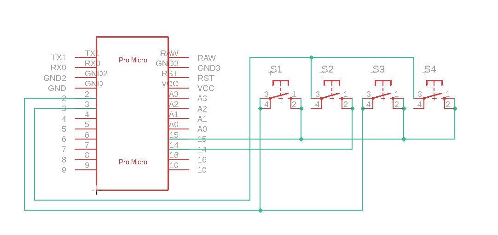
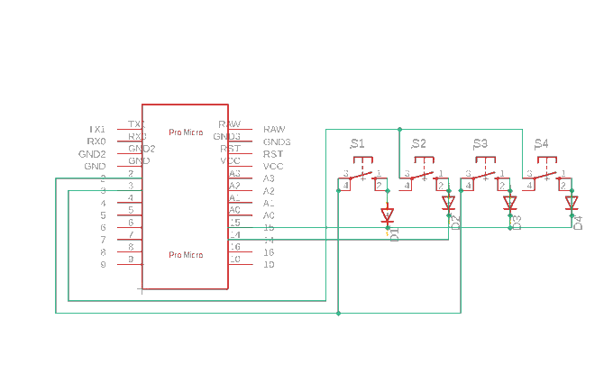

こんにちはシューです
前回に続いてキーボードを作るために試作をしていきたいと思います
とにもかくにも部品がないと試作もなにもできないので今回新しく買ったものを紹介します
ちなみにですが、私はこのようなスターターキットを購入しているので、タクトスイッチなど一部パーツはすでに持っています
ではまず下準備をしていきましょう
pro microはピンヘッダがハンダされていなかったので自分でハンダしました
へたくそで曲がった状態でハンダしてしまいましたが、これはパワーで解決。脳死最強
ハンダの練習はまだまだいりますね...
ではまずは1キーの単純なキーボードを作ってみます
回路はこんな感じ

タクトスイッチの片方はGND、もう片方はデジタルピンの9に接続しました
プルアップはスケッチでやるので抵抗はなしです
スイッチの脚が4つありますが、つながりは各自調べてみてくださいarduino スイッチで検索すれば出てくると思います
てかpro micro、想像の数倍小さかったですね
さて、次はIEDの設定をしていきます
IEDは公式サイトからダウンロードできるのでArduino IEDとかで調べてください

マイコンをpcに接続して、ツール>ボード>Arduino Leonardoを選択します
micro系はLeonardoの小型機らしいのでこちらを選択しておけば大丈夫です
シリアルポートも各自選択しておいてください
pcにマイコンを接続すると出てくるのでそれを選択しておきます
最後にスケッチを書いていきます
スケッチとは、プログラムのことです
arduino界隈ではプログラムのことはスケッチと呼ぶみたいですが、好きな呼び方で問題ないでしょう
キーボードのライブラリは確かダウンロードが必要だったと思います
これも各自調べてみてください
→のボタンを押して、書き込んでみましょう
— シュー/きゃべつ (@H2DH8K) September 4, 2021
1キーのキーボードが出来たら次はボタンを増やして行きたいですよね
なのでとりあえず4キーのキーボードを作っていきます4キー分しかスイッチが余ってなかった
上の用にデジタルピンとGNDに同じ感じでつないで...もいんですが、増やせば増やすほどスケッチは多くなりますし
デジタルピンの数も足りませんよね。今回のように少ないキーなら行けるんですけど....こまりました
とは行きませんよ。この世界には素晴らしい方がいてキーボードを作るのに便利なものがあるんです
それがキーマトリックスというものです
いや、キーマトリックスってなんぞや？
まぁそうなりますよね。私自身も完全に理解したわけではないので説明できるレベルじゃないんですよね...
参考にした記事様があるので、よければそちらを読んでみてください。配線自体はかなり簡単なんですよね
マトリックスはとりあえず置いといて、回路図をみてみましょう

へたくそですみません。見にくいですよね
上手く回路図が書ける方法があったらぜひ教えてください...
とりあえずそれは置いてきまして、今回はこんな回路を作ってみました
上のリンクの記事であったような配線ですね
スケッチはこちら
スケッチも完全には理解してないです...すみません
このスケッチを書くことで、いじるところを最小限に、そして簡単に実装することができるんですね
考えた方には感謝...！！！
実際の動作はこちら
できた！！！4キーキーボード！！！！！！
— シュー/きゃべつ (@H2DH8K) September 6, 2021
シフトで大文字、コントロールでショートカットも使える！！！！
?はタイプミス pic.twitter.com/FJ52dElbAi
ここで出てくるのが誤動作に関する問題です
同時押しとかをすると電流が行くべきではないところに流れて誤ったキーを押してしまいます
それを解決するのがスイッチング ダイオードというものです
先ほどの回路にダイオードを追加するとこんな感じ

アノードとカソードを間違えないように、スイッチの出力側につけます
これで逆流が防止されて誤動作もしにくくなると思います
ということで今回はこれで終わりです
どうだったでしょうか？
回路図とかが少々みにくいのは許してください。今回の記事を書くのに色々調べながら回路図を書いたので悪しからず...
まぁそんなこんなで次回くらいが最終回になると思います
そのため、試作期間とか部品発注とかでいつ頃また投稿するかはちょっと不明です
ケースの自作とかもあるので...3Dプリンタ欲しい...
よければこの時期を参考に自分だけのキーボード、作ってみてください
それではまた次回
ツイートする